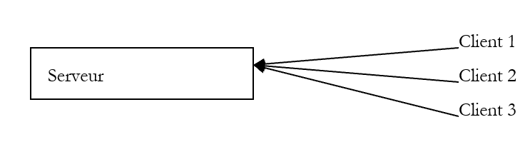
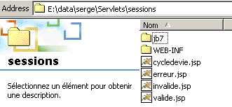
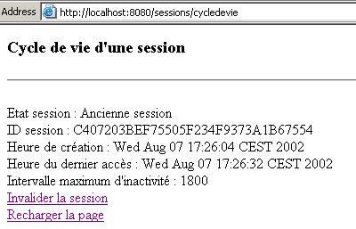
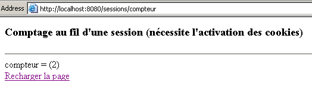
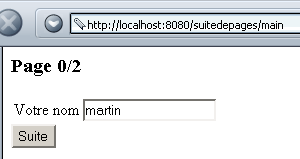
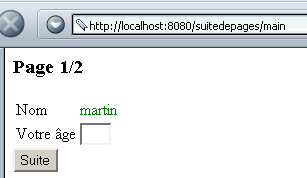
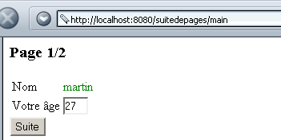
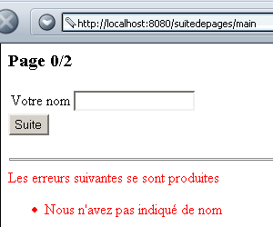
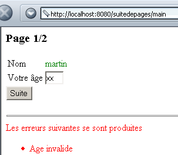

4. تتبع الجلسة
4.1. المشكلة
قد يتألف تطبيق الويب من عدة عمليات تبادل للنماذج بين الخادم والعميل. وعندئذ يكون سير العمل كما يلي:
- الخطوة 1
- يقوم العميل C1 بفتح اتصال مع الخادم وإرسال طلبه الأولي.
- يرسل الخادم النموذج F1 إلى العميل C1 ويغلق الاتصال الذي تم فتحه في الخطوة 1.
- الخطوة 2
- يقوم العميل C1 بملء النموذج وإرساله إلى الخادم. وللقيام بذلك، يفتح المتصفح اتصالاً جديداً مع الخادم.
- يقوم الخادم بمعالجة بيانات النموذج 1، ويحسب المعلومات I1 بناءً عليها، ويرسل نموذجًا F2 إلى العميل C1 ويغلق الاتصال المفتوح في الخطوة 3.
- الخطوة 3
- يتكرر دورة الخطوتين 3 و4 في الخطوتين 5 و6. عند انتهاء الخطوة 6، سيكون الخادم قد تلقى نموذجين هما F1 و F2، وسيقوم بناءً عليهما بحساب المعلومات I1 و I2.
المشكلة المطروحة هي: كيف يحافظ الخادم على المعلومات I1 و I2 المرتبطة بالعميل C1؟ يُطلق على هذه المشكلة اسم «تتبع جلسة عمل العميل C1». لفهم جذور هذه المشكلة، دعونا نلقي نظرة على مخطط تطبيق خادم TCP-IP الذي يخدم عدة عملاء في وقت واحد:
 |
في تطبيق عميل-خادم TCP-IP التقليدي:
- يقوم العميل بإنشاء اتصال مع الخادم
- ويقوم عبر هذا الاتصال بتبادل البيانات مع الخادم
- يتم إغلاق الاتصال من قبل أحد الطرفين
النقطتان المهمتان في هذه الآلية هما:
- يتم إنشاء اتصال واحد لكل عميل
- يُستخدم هذا الاتصال طوال مدة الحوار بين الخادم وعميله
ما يسمح للخادم بمعرفة العميل الذي يتعامل معه في أي لحظة معينة هو الاتصال، أو بعبارة أخرى «القناة» التي تربطه بعميله. وبما أن هذه القناة مخصصة لعميل معين، فإن كل ما يصل عبر هذه القناة يأتي من هذا العميل، وكل ما يتم إرساله عبر هذه القناة يصل إلى العميل.
تتبع آلية العميل-الخادم HTTP المخطط السابق بدقة، مع ميزة تتمثل في أن التفاعل بين العميل والخادم يقتصر على تبادل واحد فقط بينهما:
- يقوم العميل بفتح اتصال بالخادم وتقديم طلبه
- يقوم الخادم بالرد ويغلق الاتصال
إذا قام العميل C، في الوقت T1، بتوجيه طلب إلى الخادم، فسيحصل على اتصال C1 الذي سيُستخدم في التبادل الوحيد للطلب والاستجابة. إذا قام هذا العميل نفسه، في الوقت T2، بتقديم طلب ثانٍ إلى الخادم، فسيحصل على اتصال C2 يختلف عن الاتصال C1. بالنسبة للخادم، لا يوجد أي فرق بين هذا الطلب الثاني للمستخدم C وطلبه الأولي: في كلتا الحالتين، يعتبر الخادم العميل عميلاً جديداً. ولكي يكون هناك ارتباط بين الاتصالات المختلفة للعميل C بالخادم، يجب أن «يتعرف» الخادم على العميل C باعتباره «عميلاً معتادًا» وأن يسترد الخادم المعلومات التي لديه عن هذا العميل المعتاد.
لنتخيل نظام إدارة يعمل بالطريقة التالية:
- هناك قائمة انتظار واحدة
- هناك عدة شبابيك. وبالتالي يمكن خدمة عدة عملاء في وقت واحد. عندما يتوفر شباك، يغادر عميل قائمة الانتظار ليتم خدمته عند هذا الشباك
- إذا كانت هذه هي المرة الأولى التي يحضر فيها العميل، فإن الموظف عند الشباك يعطيه قسيمة تحمل رقمًا. لا يمكن للعميل طرح سوى سؤال واحد. وعندما يحصل على إجابته، يجب عليه مغادرة الشباك والانتقال إلى نهاية طابور الانتظار. يقوم موظف الشباك بتدوين معلومات هذا العميل في ملف يحمل رقمه.
- وعندما يحين دوره مرة أخرى، قد يتم خدمة العميل من قبل موظف شباك آخر غير الذي خدمه في المرة السابقة. يطلب منه هذا الموظف الرقاقة ويستلم الملف الذي يحمل رقم الرقاقة. مرة أخرى، يقدم العميل طلبًا، ويحصل على إجابة، وتُضاف المعلومات إلى ملفه.
- وهكذا دواليك... وبمرور الوقت، سيحصل العميل على إجابة لجميع طلباته. ويتم تتبع الطلبات المختلفة بفضل الرقم التعريفي والملف المرتبط به.
آلية تتبع الجلسة في تطبيق الويب من نوع «العميل-الخادم» مشابهة للطريقة السابقة:
- عند تقديم الطلب الأول، يحصل العميل على رمز من خادم الويب
- وسيقدم هذا الرمز في كل طلب لاحق له للتعريف بنفسه
يمكن أن يتخذ الرمز أشكالًا مختلفة:
- حقل مخفي في نموذج
- يقوم العميل بإرسال طلبه الأول (يتعرف عليه الخادم من خلال عدم وجود رمز لدى العميل)
- يقوم الخادم بالرد (نموذج) ويضع الرمز في حقل مخفي فيه. في هذه اللحظة، يتم إغلاق الاتصال (يغادر العميل النافذة مع رمزه). وقد يكون الخادم قد حرص على ربط معلومات بهذا الرمز.
- يقوم العميل بإرسال طلبه الثاني عن طريق إعادة إرسال النموذج. يسترد الخادم الرمز من النموذج. وبذلك يمكنه معالجة الطلب الثاني للعميل من خلال الوصول، بفضل الرمز، إلى المعلومات التي تم حسابها أثناء الطلب الأول. تُضاف معلومات جديدة إلى الملف المرتبط بالرمز، ويتم إرسال استجابة ثانية إلى العميل، ثم يُغلق الاتصال للمرة الثانية. وقد أُعيد إدراج الرمز في نموذج الاستجابة حتى يتمكن المستخدم من تقديمه عند طلبه التالي.
- وهكذا دواليك...
العيب الرئيسي لهذه التقنية هو أن الرمز المميز يجب إدراجه في نموذج. إذا لم تكن استجابة الخادم عبارة عن نموذج، فإن طريقة الحقل المخفي تصبح غير قابلة للاستخدام.
- طريقة ملف تعريف الارتباط
- يقوم العميل بإرسال طلبه الأول (يتعرف عليه الخادم من خلال عدم وجود رمز لدى العميل)
- يقوم الخادم بالرد بإضافة ملف تعريف ارتباط في رؤوس HTTP الخاصة بالرد. ويتم ذلك باستخدام الأمر HTTP Set-Cookie:
Set-Cookie: param1=القيمة1;param2=القيمة2;....
حيث تمثل parami أسماء المعلمات وvaleursi قيمها. ومن بين هذه المعلمات، سيكون هناك الرمز المميز. وفي كثير من الأحيان، لا يحتوي ملف تعريف الارتباط إلا على الرمز المميز، بينما يتم تسجيل المعلومات الأخرى بواسطة الخادم في المجلد المرتبط بالرمز المميز. ويقوم المتصفح الذي يتلقى ملف تعريف الارتباط بتخزينه في ملف على القرص. وبعد استجابة الخادم، يتم إغلاق الاتصال (يغادر العميل النافذة مع رمزه المميز).
- (تابع)
- يقوم العميل بتوجيه طلبه الثاني إلى الخادم. في كل مرة يتم فيها توجيه طلب إلى الخادم، يبحث المتصفح بين جميع ملفات تعريف الارتباط الموجودة لديه، لمعرفة ما إذا كان لديه ملف تعريف ارتباط قادم من الخادم المطلوب. وإذا كان الأمر كذلك، فإنه يرسلها إلى الخادم دائمًا في شكل أمر HTTP، وهو أمر ملف تعريف الارتباط الذي له صيغة مشابهة لتلك الخاصة بأمر Set-Cookie الذي يستخدمه الخادم:
Cookie: param1=value1;param2=value2;....
من بين المعلمات التي يرسلها المتصفح، سيجد الخادم الرمز الذي يمكّنه من التعرف على العميل واسترجاع المعلومات المرتبطة به.
وهذا هو الشكل الأكثر استخدامًا للرمز المميز. لكنه ينطوي على عيب واحد: يمكن للمستخدم تهيئة متصفحه بحيث لا يقبل ملفات تعريف الارتباط. وبالتالي، لا يستطيع هذا النوع من المستخدمين الوصول إلى تطبيقات الويب التي تستخدم ملفات تعريف الارتباط.
- إعادة كتابة URL
- يقوم العميل بإرسال طلبه الأول (يتعرف عليه الخادم من خلال عدم وجود رمز لدى العميل)
- يرسل الخادم ردّه. يحتوي هذا الرد على روابط يجب على المستخدم استخدامها لمتابعة التطبيق. في عنوان كل رابط من هذه الروابط (URL)، يضيف الخادم الرمز على الشكل URL;رمز=قيمة.
- عندما ينقر المستخدم على أحد الروابط لمتابعة التطبيق، يرسل المتصفح طلبه إلى خادم الويب عن طريق إرسال الرمز المطلوب في رؤوس الطلب على النحو التالي: HTTP URL URL;token=القيمة المطلوبة. وبذلك يتمكن الخادم من استرداد الرمز المميز.
4.2. API جافا لتتبع الجلسة
نقدم الآن الطرق الرئيسية المفيدة لتتبع الجلسة:
تحصل على الكائن Session الذي تنتمي إليه الطلب الحالي. إذا لم يكن هذا الطلب جزءًا من جلسة عمل بعد، يتم إنشاء الجلسة. | |
معرف الجلسة الحالية | |
تاريخ إنشاء الجلسة الحالية (عدد المللي ثانية التي انقضت منذ 1 يناير 1970، الساعة 00:00). | |
تاريخ آخر وصول للعميل إلى الجلسة | |
المدة القصوى لعدم النشاط في الجلسة بالثواني. بعد انقضاء هذه المدة، يتم إلغاء الجلسة. | |
يحدد المدة القصوى لعدم النشاط في الجلسة بالثواني. بعد انقضاء هذه المدة، يتم إبطال الجلسة. | |
صحيح إذا كانت الجلسة قد تم إنشاؤها للتو | |
يربط قيمة بمعلمة في جلسة معينة. هذه الآلية هي التي تسمح بتخزين المعلومات التي ستظل متاحة طوال مدة الجلسة. | |
يزيل parametre من بيانات الجلسة. | |
القيمة المرتبطة بالمعلمة paramètre في الجلسة. تُرجع null إذا لم تكن الأخيرة موجودة. | |
قائمة على شكل تعداد بجميع سمات الجلسة الحالية | |
يُغلق الجلسة الحالية. يتم حذف جميع المعلومات المرتبطة بها. |
4.3. مثال 1
نقدم مثالاً مأخوذًا من الكتاب الممتاز "البرمجة باستخدام J2EE" الصادر عن دار نشر Wrox والموزع من قبل Eyrolles. يُعد هذا الكتاب منجمًا للمعلومات عالية المستوى لمطوري حلول الويب بلغة Java. وقد تم هنا إعادة عرض التطبيق المقدم في هذا الكتاب على شكل سيرفلت Java واحد، في شكل سيرفلت رئيسي يستخدم صفحات JSP لعرض مختلف الردود الممكنة للعميل.
يُسمى التطبيق «sessions» ويتم تكوينه على النحو التالي في الملف <tomcat>\conf\server.xml:
في المجلد docBase المذكور أعلاه، توجد العناصر التالية:

الملفات erreur.jsp و invalide.jsp و valide.jsp مرتبطة جميعها بتطبيق sessions. في المجلد WEB-INF أعلاه، نجد:

نرى أعلاه ملف web.xml الخاص بتكوين تطبيق sessions. في المجلد classes، نجد ملف فئة السيرفلت:

ملف التطبيق web.xml هو كما يلي:
<?xml version="1.0" encoding="ISO-8859-1"?>
<!DOCTYPE web-app
PUBLIC "-//Sun Microsystems, Inc.//DTD Web Application 2.3//EN"
"http://java.sun.com/dtd/web-app_2_3.dtd">
<web-app>
<servlet>
<servlet-name>cycledevie</servlet-name>
<servlet-class>cycledevie</servlet-class>
<init-param>
<param-name>urlSessionValide</param-name>
<param-value>/valide.jsp</param-value>
</init-param>
<init-param>
<param-name>urlSessionInvalide</param-name>
<param-value>/invalide.jsp</param-value>
</init-param>
<init-param>
<param-name>urlErreur</param-name>
<param-value>/erreur.jsp</param-value>
</init-param>
</servlet>
<servlet-mapping>
<servlet-name>cycledevie</servlet-name>
<url-pattern>/cycledevie</url-pattern>
</servlet-mapping>
</web-app>
تسمى الخدمة الرئيسية cycledevie (servlet-name) وهي مرتبطة بملف الفئة cycledevie.class (servlet-class). ولها اسم مستعار هو /cycledevie (servlet-mapping) الذي يتيح استدعاءها عبر URL وhttp://localhost:8080/sessions/cycledevie. ولديها ثلاثة معلمات تهيئة:
رابط الصفحة التي تعرض خصائص الجلسة الحالية | |
عنوان URL للصفحة التي تظهر بعد إبطال صلاحية الجلسة الحالية | |
عنوان URL للصفحة التي تظهر في حالة حدوث خطأ في تهيئة السيرفلت الرئيسي cycledevie |
مكونات تطبيق sessions هي التالية:
الخادم الرئيسي - يحلل طلب العميل:
| |
| |
يتم عرضها عندما يقوم المستخدم بإلغاء صلاحية الجلسة الحالية. ثم يعرض عليه إنشاء جلسة جديدة. | |
يتم عرضها عندما تواجه السيرفلت الرئيسية أخطاءً أثناء تهيئتها. |
الـservlet الرئيسي cycledevie هو التالي:
import java.io.*;
import javax.servlet.*;
import javax.servlet.http.*;
public class cycledevie extends HttpServlet{
// متغيرات المثيل
String msgErreur=null;
String urlSessionInvalide=null;
String urlSessionValide=null;
String urlErreur=null;
//-------- GET
public void doGet(HttpServletRequest request, HttpServletResponse response)
throws IOException, ServletException{
// هل تمت عملية التهيئة بنجاح؟
if(msgErreur!=null){
// يتم التوجيه إلى صفحة الخطأ
getServletContext().getRequestDispatcher(urlErreur).forward(request,response);
}
// استرداد الجلسة الحالية
HttpSession session=request.getSession();
// تحليل الإجراء المطلوب
String action=request.getParameter("action");
// إلغاء صلاحية الجلسة الحالية
if(action!=null && action.equals("invalider")){
// إبطال صلاحية الجلسة الحالية
session.invalidate();
// نقوم بتحويل السيطرة إلى الرابط urlSessionInvalide
getServletContext().getRequestDispatcher(urlSessionInvalide).forward(request,response);
}
// حالات أخرى
// يتم التمرير إلى عنوان URL urlSessionInvalide
getServletContext().getRequestDispatcher(urlSessionValide).forward(request,response);
}
//-------- POST
public void doPost(HttpServletRequest request, HttpServletResponse response)
throws IOException, ServletException{
doGet(request,response);
}
//-------- INIT
public void init(){
// يتم استرداد معلمات التهيئة
ServletConfig config=getServletConfig();
urlSessionInvalide=config.getInitParameter("urlSessionInvalide");
urlSessionValide=config.getInitParameter("urlSessionValide");
urlErreur=config.getInitParameter("urlErreur");
// هل المعلمات صحيحة؟
if(urlSessionValide==null || urlSessionInvalide==null){
msgErreur="Configuration incorrecte";
}
}
}
تجدر الإشارة إلى النقاط التالية:
- في طريقة التهيئة الخاصة بها، تسترد السيرفلت معلماتها الثلاثة
- في عملية معالجة الطلب (doGet)، تقوم السيرفلت بما يلي:
- تتحقق أولاً من عدم وجود أي خطأ أثناء التهيئة. إذا كان هناك خطأ، فإنها تنتقل إلى الصفحة erreur.jsp.
- تتحقق من قيمة المعلمة action. إذا كانت هذه المعلمة تساوي "invalider"، فإن السيرفلت يحيل الطلب إلى الصفحة invalide.jsp، وإلا فإنه يحيله إلى الصفحة valide.jsp.
الصفحة JSP valide.jsp لعرض خصائص الجلسة الحالية:
<%@ page import="java.util.*" %>
<%
// jspService
// هنا نحن في الحالة التي يتعين فيها وصف الجلسة الحالية
String etat= session.isNew() ? "Nouvelle session" : "Ancienne session";
%>
<!-- بداية الصفحة HTML -->
<html>
<meta http-equiv="pragma" content="no-cache">
<head>
<title>Cycle de vie d'une session</title>
</head>
<body>
<h3>Cycle de vie d'une session</h3>
<hr>
<br>Etat session : <%= etat %>
<br>ID session : <%= session.getId() %>
<br>Heure de création : <%= new Date(session.getCreationTime()) %>
<br>Heure du dernier accès : <%= new Date(session.getLastAccessedTime()) %>
<br>Intervalle maximum d'inactivité : <%= session.getMaxInactiveInterval() %>
<br><a href="/sessions/cycledevie?action=invalider">Invalider la session</a>
<br><a href="/sessions/cycledevie">Recharger la page</a>
<body>
</html>
تجدر الإشارة إلى أنه في السطر
يتم استخدام كائن جلسة عمل ظهر من العدم. في الواقع، هذا الكائن هو جزء من الكائنات الضمنية المتاحة لصفحات JSP، مثل الكائنات request وresponse وout، config (ServletConfig)، وcontext (ServletContext) التي سبق ذكرها. يشير الرابطان الموجودان في الصفحة إلى السيرفلت cycledevie الذي تم عرضه سابقًا:
<br><a href="/sessions/cycledevie?action=invalider">Invalider la session</a>
<br><a href="/sessions/cycledevie">Recharger la page</a>
يحتوي الرابط الخاص بإلغاء صلاحية الجلسة على المعلمة action=invalider التي ستسمح لـ servlet cycledevie بالتعرف على رغبة المستخدم في إلغاء صلاحية الجلسة الحالية. أما الرابط الآخر فيسمح بإعادة تحميل الصفحة. ولكي لا يبحث المتصفح عن هذه الصفحة في ذاكرة التخزين المؤقت، يتم استخدام التوجيه HTML:
. وهي توجه المتصفح بعدم استخدام ذاكرة التخزين المؤقت للصفحة التي يتلقاها.
الصفحة invalide.jsp هي التالية:
<!-- بداية الصفحة HTML -->
<html>
<head>
<title>Cycle de vie d'une session</title>
</head>
<body>
<h3>Cycle de vie d'une session</h3>
<hr>
Votre session a été invalidée
<a href="/sessions/cycledevie">Créer une nouvelle session</a>
</body>
</html>
وهي توفر رابطًا يشير إلى السيرفلت cycledevie بدون المعلمة action. سيؤدي هذا الرابط إلى قيام السيرفلت cycledevie بإنشاء جلسة جديدة.
الصفحة erreur.jsp هي كما يلي:
<%
// jspService
// هنا نحن في الحالة التي يتعين فيها وصف الجلسة الحالية
String msgErreur= request.getAttribute("msgErreur");
if(msgErreur==null) msgErreur="Erreur non identifiée)";
%>
<!-- بداية الصفحة HTML -->
<html>
<head>
<title>Cycle de vie d'une session</title>
</head>
<body>
<h3>Cycle de vie d'une session</h3>
<hr>
Application indisponible(<%= msgErreur %>)
</body>
</html>
وتتمثل مهمتها في عرض رسالة الخطأ التي أرسلتها إليها السيرفلت cycledevie. لنلقِ نظرة الآن على أمثلة للتنفيذ. يتم استدعاء السيرفلت للمرة الأولى:

تشير الصفحة أعلاه إلى أننا في جلسة عمل جديدة. نستخدم الرابط «إعادة تحميل الصفحة»:

تشير النتيجة السابقة إلى أننا ما زلنا في نفس الجلسة التي كنا فيها في الصفحة السابقة (نفس ID). نلاحظ أن وقت آخر وصول إلى هذه الجلسة قد تغير. الآن لنستخدم الرابط «إلغاء الجلسة»:

نلاحظ أن معرّف URL لهذه الصفحة الجديدة يختلف عن المعرّف action=invalider. لنستخدم الرابط «إنشاء جلسة جديدة» لإنشاء جلسة جديدة:

نلاحظ أن جلسة جديدة قد بدأت. في الأمثلة السابقة، تعتمد الجلسة على آلية ملفات تعريف الارتباط. دعونا الآن نمنع استخدام ملفات تعريف الارتباط في متصفحنا ونعيد إجراء الاختبارات. تم تنفيذ الأمثلة التالية باستخدام Netscape Communicator. ولسبب غير مفسر، أسفرت الاختبارات التي أُجريت باستخدام IE6 عن نتائج غير متوقعة، كما لو أن IE6 استمرت في استخدام ملفات تعريف الارتباط على الرغم من تعطيلها. تم طلب السيرفلت cycledevie للمرة الأولى:

نستخدم الآن الرابط «إعادة تحميل الصفحة»:

يمكن ملاحظة أمرين:
- تغير رقم الجلسة ID
- تتعرف السيرفلت على الجلسة على أنها جلسة جديدة
يقدم خادم Tomcat حلاً لمشكلة المستخدمين الذين يمنعون استخدام ملفات تعريف الارتباط في متصفحهم. ويستخدم آليتين لتنفيذ الرمز الذي تحدثنا عنه في بداية هذه الفقرة: ملفات تعريف الارتباط وإعادة كتابة URL. إذا لم تكن ملفات تعريف الارتباط الخاصة بالجلسة متاحة، فسيحاول الحصول على الرمز من عنوان URL الذي طلبه العميل. ولذلك، يجب أن تحتوي هذه السلسلة على الرمز المميز. وبشكل عام، يجب أن تحتوي جميع الروابط التي يتم إنشاؤها في مستند HTML إلى تطبيق الويب على الرمز المميز الخاص به. ويمكن القيام بذلك باستخدام الطريقة encodeURL:
تضيف رمز الجلسة الحالية إلى URL الذي تم تمريره كمعلمة بالصيغة URL;jsessionid=xxxx |
نقوم بتعديل تطبيقنا على النحو التالي:
- في السيرفلت cycledevie.java، يتم ترميز URL على النحو التالي:
// نقوم بتحويل السيطرة إلى صفحة الخطأ
getServletContext().getRequestDispatcher(response.encodeURL(urlErreur)).forward(request,response);
....
// نقوم بتحويل السيطرة إلى عنوان URL urlSessionInvalide
getServletContext().getRequestDispatcher(response.encodeURL(urlSessionInvalide)).forward(request,response);
....
// يتم التوجيه إلى الرابط urlSessionInvalide
getServletContext().getRequestDispatcher(response.encodeURL(urlSessionValide)).forward(request,response);
- في الصفحة valide.jsp، يتم ترميز URL على النحو التالي:
<%
// jspService
// هنا نحن في الحالة التي يتعين فيها وصف الجلسة الحالية
String etat= session.isNew() ? "Nouvelle session" : "Ancienne session";
// ترميز URL cycledevie
String URLcycledevie=response.encodeURL("/sessions/cycledevie");
%>
............
<br><a href="<%= URLcycledevie %>?action=invalider">Invalider la session</a>
<br><a href="<%= URLcycledevie %>">Recharger la page</a>
- في الصفحة invalide.jsp، يتم ترميز URL على النحو التالي:
<%
// jspservice - يتم إبطال صلاحية الجلسة الحالية
session.invalidate();
// ترميز URL cycledevie
String URLcycledevie=response.encodeURL("/sessions/cycledevie");
%>
..........
<a href="<%= URLcycledevie %>">Créer une nouvelle session</a>
الآن نحن جاهزون لإجراء الاختبارات. نستخدم متصفح Netscape 4.5 وقد تم تعطيل ملفات تعريف الارتباط. نطلب لأول مرة خدمة servlet cycledevie:

ونقوم بإعادة تحميل الصفحة باستخدام الرابط «إعادة تحميل الصفحة»:

يمكننا ملاحظة أن:
- لم تتغير الجلسة (نفس ID)
- يحتوي URL الخاص بـ servlet cycledevie بالفعل على الرمز المميز كما يظهر في الحقل Adresse أعلاه
- وبالتالي، يسترد خادم Tomcat رمز الجلسة من URL المطلوب (إذا كان المطور قد حرص على ترميزه).
4.4. المثال 2
نقدم الآن مثالاً يوضح كيفية تخزين المعلومات في جلسة عمل العميل. هنا، ستكون المعلومة الوحيدة عبارة عن عداد يتم زيادته في كل مرة يستدعي فيها المستخدم URL من السيرفلت. عند استدعاء هذا السيرفلت للمرة الأولى، تظهر الصفحة التالية:

إذا نقرنا على الرابط «إعادة تحميل الصفحة» أعلاه، فسنحصل على الصفحة الجديدة التالية:

يتكون التطبيق من ثلاثة مكونات:
- سيرفلت يعالج طلب العميل
- صفحة JSP تعرض قيمة العداد
- صفحة JSP تعرض أي خطأ محتمل
يتم تثبيت هذه المكونات الثلاثة في تطبيق الويب «sessions» المستخدم بالفعل. وقد تم تعديل الملف web.xml الخاص بهذا التطبيق لتكوين السيرفلتات الجديدة:
<?xml version="1.0" encoding="ISO-8859-1"?>
<!DOCTYPE web-app
PUBLIC "-//Sun Microsystems, Inc.//DTD Web Application 2.3//EN"
"http://java.sun.com/dtd/web-app_2_3.dtd">
<web-app>
...
<servlet>
<servlet-name>compteur</servlet-name>
<servlet-class>compteur</servlet-class>
<init-param>
<param-name>urlAffichageCompteur</param-name>
<param-value>/compteur.jsp</param-value>
</init-param>
<init-param>
<param-name>urlErreur</param-name>
<param-value>/erreurcompteur.jsp</param-value>
</init-param>
</servlet>
...
<servlet-mapping>
<servlet-name>compteur</servlet-name>
<url-pattern>/compteur</url-pattern>
</servlet-mapping>
</web-app>
- تسمى السيرفلت «compteur» (servlet-name) وهي مرتبطة بملف الفئة compteur.class (servlet-class)
- ولها معلمتان للتهيئة:
- urlAffichageCompteur: URL من صفحة عرض العداد JSP
- urlErreur: URL من صفحة JSP لعرض أي خطأ محتمل
- واسم مستعار /compteur مما يعني أنه سيتم استدعاؤه عبر URL http://localhost:8080/sessions/compteur
البرنامج الخادم compteur.java هو التالي:
import java.io.*;
import javax.servlet.*;
import javax.servlet.http.*;
public class compteur extends HttpServlet{
// متغيرات المثيل
String msgErreur=null;
String urlAffichageCompteur=null;
String urlErreur=null;
//-------- GET
public void doGet(HttpServletRequest request, HttpServletResponse response)
throws IOException, ServletException{
// هل تمت عملية التهيئة بنجاح؟
if(msgErreur!=null){
// ننتقل إلى صفحة الخطأ
getServletContext().getRequestDispatcher(urlErreur).forward(request,response);
}
// استرداد الجلسة الحالية
HttpSession session=request.getSession();
// والعداد
String compteur=(String)session.getAttribute("compteur");
if(compteur==null) compteur="0";
// زيادة العداد
try{
compteur=""+(Integer.parseInt(compteur)+1);
}catch(Exception ex){}
// تخزين العداد في الجلسة
session.setAttribute("compteur",compteur);
// وفي الاستعلام
request.setAttribute("compteur",compteur);
// ننتقل إلى عنوان URL لعرض العداد
getServletContext().getRequestDispatcher(urlAffichageCompteur).forward(request,response);
}
//-------- POST
public void doPost(HttpServletRequest request, HttpServletResponse response)
throws IOException, ServletException{
doGet(request,response);
}
//-------- INIT
public void init(){
// يتم استرداد معلمات التهيئة
ServletConfig config=getServletConfig();
urlAffichageCompteur=config.getInitParameter("urlAffichageCompteur");
urlErreur=config.getInitParameter("urlErreur");
// هل المعلمات صحيحة؟
if(urlAffichageCompteur==null){
msgErreur="Configuration incorrecte";
}
}
}
تتميز هذه الخدمة (servlet) بنفس بنية الخدمات التي سبق أن تناولناها. ونكتفي هنا بالإشارة إلى طريقة إدارة العداد:
- يتم استرداد الجلسة عبر request.getSession()
- يتم استرداد العداد في هذه الجلسة عبر session.getAttribute("compteur")
- إذا تم استرداد قيمة null، فهذا يعني أن الجلسة قد بدأت للتو. عندئذٍ يتم تعيين العداد على 0.
- يتم زيادة العداد، وإعادته إلى الجلسة (session.setAttribute("العداد",العداد)) ووضعه في الاستعلام الذي سيتم تمريره إلى سيرفلت العرض (request.setAttribute("العداد",العداد)).
صفحة العرض compteur.jsp هي كما يلي:
<%
// jspService
// يتم استرداد العداد
String compteur= (String) request.getAttribute("compteur");
if(compteur==null) compteur="inconnu";
%>
<!-- بداية الصفحة HTML -->
<html>
<head>
<title>Comptage au fil d'une session</title>
</head>
<body>
<h3>Comptage au fil d'une session (nécessite l'activation des cookies)</h3>
<hr>
compteur = (<%= compteur %>)
<br><a href="/sessions/compteur">Recharger la page</a>
</body>
</html>
تكتفي الصفحة أعلاه باسترداد السمة compteur (request.getAttribute("compteur")) التي أرسلتها إليها السيرفلت الرئيسية وعرضها.
صفحة الخطأ erreurcompteur.jsp هي كما يلي:
<%
// jspService
// حدث خطأ
String msgErreur= request.getAttribute("msgErreur");
if(msgErreur==null) msgErreur="Erreur non identifiée";
%>
<!-- بداية الصفحة HTML -->
<html>
<head>
<title>Comptage au fil d'une session</title>
</head>
<body>
<h3>Comptage au fil d'une session (nécessite l'activation des cookies)</h3>
<hr>
Application indisponible(<%= msgErreur %>)
</body>
</html>
4.5. المثال 3
نقترح كتابة تطبيق جافا يكون عميلاً للتطبيق compteur السابق. وسيقوم هذا التطبيق باستدعاء التطبيق السابق N مرة متتالية، حيث يتم تمرير القيمة N كمعلمة. هدفنا هو عرض عميل ويب مبرمج وشرح كيفية إدارة ملفات تعريف الارتباط. ستكون نقطة انطلاقنا هي عميل ويب عام مقدم في كتيب جافا للكاتب نفسه. ويتم استدعاؤه على النحو التالي:
clientweb URL GET/HEAD
- URL: عنوان URL المطلوب
- GET/HEAD: GET لطلب الرمز HTML للصفحة، وHEAD للاقتصار على الرؤوس فقط HTTP
فيما يلي مثال باستخدام URL و http://localhost:8080/sessions/compteur:
E:\data\serge\JAVA\SOCKETS\client web>java clientweb http://localhost:8080/sessions/compteur GET
HTTP/1.1 200 OK
Content-Type: text/html;charset=ISO-8859-1
Date: Thu, 08 Aug 2002 14:21:18 GMT
Connection: close
Server: Apache Tomcat/4.0.3 (HTTP/1.1 Connector)
Set-Cookie: JSESSIONID=B8A9076E552945009215C34A97A0EC5D;Path=/sessions
<!-- بداية الصفحة HTML -->
<html>
<head>
<title>Comptage au fil d'une session</title>
</head>
<body>
<h3>Comptage au fil d'une session (nécessite l'activation des cookies)</h3>
<hr>
compteur = (1)
<br><a href="/sessions/compteur">Recharger la page</a>
</body>
</html>
يعرض البرنامج clientweb كل ما يتلقاه من الخادم. نرى أعلاه الأمر HTTP Set-cookie الذي يستخدمه الخادم لإرسال ملف تعريف ارتباط إلى عميله. هنا يحتوي ملف تعريف الارتباط على معلومتين:
- JSESSIONID وهو رمز الجلسة
- Path الذي يحدد URL التي تنتمي إليها ملف تعريف الارتباط. يُشير Path=/sessions إلى المتصفح بأنه سيتعين عليه إعادة إرسال ملف تعريف الارتباط إلى الخادم في كل مرة يطلب فيها URL تبدأ بـ /sessions. في التطبيق sessions، استخدمنا سيرفلتات مختلفة، منها السيرفلتات /sessions/cycledevie و/sessions/compteur. إذا تم استدعاء السيرفلت /sessions/cycledevie، فسيتلقى المتصفح الرمز المميز J. وإذا تم، باستخدام نفس المتصفح، ثم استدعينا السيرفلت /sessions/compteur، فسيقوم المتصفح بإعادة إرسال الرمز J إلى الخادم لأن هذا الرمز ينطبق على جميع السيرفلتات URL التي تبدأ بـ /sessions. في مثالنا، لا يتعين على السيرفلتين cycledevie و compteur مشاركة رمز الجلسة نفسه. ولذلك، ما كان ينبغي وضعهما في نفس التطبيق الويب. وهذه نقطة يجب تذكرها: جميع السيرفلتات في نفس التطبيق تشترك في رمز الجلسة نفسه.
- يمكن لملف تعريف الارتباط أيضًا تحديد مدة صلاحية. هنا، هذه المعلومة غير موجودة. وبالتالي، سيتم حذف ملف تعريف الارتباط عند إغلاق المتصفح. يمكن أن تكون مدة صلاحية ملف تعريف الارتباط N يومًا على سبيل المثال. وطالما كان ساري المفعول، سيقوم المتصفح بإعادة إرساله في كل مرة يتم فيها الوصول إلى إحدى صفحات URL ضمن نطاقه (Path). لنأخذ مثالاً على موقع بيع عبر الإنترنت لـ CD. يمكن لهذا الموقع تتبع مسار العميل في الكتالوج الخاص به وتحديد تفضيلاته تدريجيًا: الموسيقى الكلاسيكية على سبيل المثال. يمكن تخزين هذه التفضيلات في ملف تعريف ارتباط (cookie) مدته 3 أشهر. إذا عاد هذا العميل نفسه إلى الموقع بعد شهر، فسيقوم المتصفح بإعادة إرسال ملف تعريف الارتباط إلى تطبيق الخادم. وبناءً على المعلومات الموجودة في ملف تعريف الارتباط، سيتمكن التطبيق من تكييف الصفحات التي يتم إنشاؤها وفقًا لتفضيلات العميل.
فيما يلي كود عميل الويب. وسيكون هذا الكود لاحقًا نقطة انطلاق لعميل آخر.
// الحزم المستوردة
import java.io.*;
import java.net.*;
public class clientweb{
// طلب URL
// يعرض محتوى هذه الحزمة على الشاشة
public static void main(String[] args){
// الصيغة
final String syntaxe="pg URI GET/HEAD";
// عدد المعلمات
if(args.length != 2)
erreur(syntaxe,1);
// يتم تسجيل URI المطلوب
String URLString=args[0];
String commande=args[1].toUpperCase();
// التحقق من صحة URI
URL url=null;
try{
url=new URL(URLString);
}catch (Exception ex){
// رقم URI غير صحيح
erreur("L'erreur suivante s'est produite : " + ex.getMessage(),2);
}//استثناء
// التحقق من الطلب
if(! commande.equals("GET") && ! commande.equals("HEAD")){
// الطلب غير صحيح
erreur("Le second paramètre doit être GET ou HEAD",3);
}
// يتم استخراج المعلومات المفيدة من URL
String path=url.getPath();
if(path.equals("")) path="/";
String query=url.getQuery();
if(query!=null) query="?"+query; else query="";
String host=url.getHost();
int port=url.getPort();
if(port==-1) port=url.getDefaultPort();
// يمكننا العمل
Socket client=null; // العميل
BufferedReader IN=null; // تدفق القراءة الخاص بالعميل
PrintWriter OUT=null; // تدفق الكتابة للعميل
String réponse=null; // استجابة الخادم
try{
// يتم الاتصال بالخادم
client=new Socket(host,port);
// يتم إنشاء تدفقات الإدخال والإخراج للعميل TCP
IN=new BufferedReader(new InputStreamReader(client.getInputStream()));
OUT=new PrintWriter(client.getOutputStream(),true);
// طلب URL - إرسال الرؤوس HTTP
OUT.println(commande + " " + path + query + " HTTP/1.1");
OUT.println("Host: " + host + ":" + port);
OUT.println("Connection: close");
OUT.println();
// يتم قراءة الرد
while((réponse=IN.readLine())!=null){
// معالجة الرد
System.out.println(réponse);
}//while
// انتهى الأمر
client.close();
} catch(Exception e){
// معالجة الاستثناء
erreur(e.getMessage(),4);
}//catch
}//main
// عرض الأخطاء
public static void erreur(String msg, int exitCode){
// عرض الخطأ
System.err.println(msg);
// التوقف مع وجود خطأ
System.exit(exitCode);
}//خطأ
}//فئة
نقوم الآن بإنشاء البرنامج clientCompteur الذي يتم استدعاؤه على النحو التالي:
clientCompteur URL N [JSESSIONID]
- URL: عنوان URL لخدمة السيرفلت الخاصة بالعداد
- N: عدد المرات التي سيتم فيها استدعاء هذه الخدمة
- JSESSIONID: معلمة اختيارية - رمز جلسة العمل
الهدف من البرنامج هو استدعاء خدمة العداد N مرة من خلال إدارة ملف تعريف الارتباط الخاص بالجلسة وعرض قيمة العداد التي يرسلها الخادم في كل مرة. عند انتهاء الـ N استدعاءات، يجب أن تكون قيمة العداد هي N. فيما يلي مثال أولي على التنفيذ:
E:\data\serge\Servlets\sessions\jb7>java.bat clientCompteur http://localhost:8080/sessions/عداد 3
--> GET /sessions/compteur HTTP/1.1
--> Host: localhost:8080
--> Connection: close
-->
HTTP/1.1 200 OK
Content-Type: text/html;charset=ISO-8859-1
Date: Thu, 08 Aug 2002 18:25:00 GMT
Connection: close
Server: Apache Tomcat/4.0.3 (HTTP/1.1 Connector)
Set-Cookie: JSESSIONID=92DB3808CE8FCB47D47D997C8B52294A;Path=/sessions
cookie trouvÚ : 92DB3808CE8FCB47D47D997C8B52294A
compteur : 1
--> GET /sessions/compteur HTTP/1.1
--> Host: localhost:8080
--> Cookie: JSESSIONID=92DB3808CE8FCB47D47D997C8B52294A
--> Connection: close
-->
HTTP/1.1 200 OK
Content-Type: text/html;charset=ISO-8859-1
Date: Thu, 08 Aug 2002 18:25:00 GMT
Connection: close
Server: Apache Tomcat/4.0.3 (HTTP/1.1 Connector)
compteur : 2
--> GET /sessions/compteur HTTP/1.1
--> Host: localhost:8080
--> Cookie: JSESSIONID=92DB3808CE8FCB47D47D997C8B52294A
--> Connection: close
-->
HTTP/1.1 200 OK
Content-Type: text/html;charset=ISO-8859-1
Date: Thu, 08 Aug 2002 18:25:00 GMT
Connection: close
Server: Apache Tomcat/4.0.3 (HTTP/1.1 Connector)
compteur : 3
يعرض البرنامج:
- رؤوس القوائم HTTP التي يرسلها إلى الخادم في شكل -->
- رؤوس HTTP التي يتلقاها
- قيمة العداد بعد كل استدعاء
نلاحظ أنه عند الاستدعاء الأول:
- لا يرسل العميل ملف تعريف ارتباط
- يرسل الخادم ملف تعريف ارتباط
بالنسبة للطلبات التالية:
- يقوم العميل بإعادة إرسال ملف تعريف الارتباط الذي تلقّاه من الخادم عند الزيارة الأولى بشكل منهجي. وهذا ما سيسمح للخادم بالتعرف عليه وزيادة عداده.
- أما الخادم فلا يعيد إرسال ملف تعريف الارتباط
نعيد تشغيل البرنامج السابق مع تمرير الرمز أعلاه كمعلمة ثالثة:
E:\data\serge\Servlets\sessions\jb7>java.bat clientCompteur http://localhost:8080/sessions/عداد 3 92DB3808CE8FCB47D47D997C8B52294A
--> GET /sessions/compteur HTTP/1.1
--> Host: localhost:8080
--> Cookie: JSESSIONID=92DB3808CE8FCB47D47D997C8B52294A
--> Connection: close
-->
HTTP/1.1 200 OK
Content-Type: text/html;charset=ISO-8859-1
Date: Thu, 08 Aug 2002 18:25:25 GMT
Connection: close
Server: Apache Tomcat/4.0.3 (HTTP/1.1 Connector)
compteur : 4
--> GET /sessions/compteur HTTP/1.1
--> Host: localhost:8080
--> Cookie: JSESSIONID=92DB3808CE8FCB47D47D997C8B52294A
--> Connection: close
-->
HTTP/1.1 200 OK
Content-Type: text/html;charset=ISO-8859-1
Date: Thu, 08 Aug 2002 18:25:25 GMT
Connection: close
Server: Apache Tomcat/4.0.3 (HTTP/1.1 Connector)
compteur : 5
--> GET /sessions/compteur HTTP/1.1
--> Host: localhost:8080
--> Cookie: JSESSIONID=92DB3808CE8FCB47D47D997C8B52294A
--> Connection: close
-->
HTTP/1.1 200 OK
Content-Type: text/html;charset=ISO-8859-1
Date: Thu, 08 Aug 2002 18:25:25 GMT
Connection: close
Server: Apache Tomcat/4.0.3 (HTTP/1.1 Connector)
compteur : 6
نلاحظ هنا أنه بمجرد أول اتصال من العميل، يتلقى الخادم ملف تعريف ارتباط جلسة صالحًا. تجدر الإشارة إلى أن المدة القصوى لعدم النشاط في جلسة Tomcat هي 20 دقيقة بشكل افتراضي (وهذا قابل للتعديل في الواقع). إذا أرسل الاتصال الثاني للبرنامج ملف تعريف الارتباط الذي تم استلامه خلال الاتصال الأول بسرعة كافية، فإن الخادم يعتبرها نفس الجلسة. ونشير هنا إلى ثغرة أمنية محتملة. فإذا تمكنت من اعتراض رمز جلسة العمل على الشبكة، فسأتمكن من انتحال صفة الشخص الذي بدأ الجلسة. في مثالنا، يمثل الاستدعاء الأول الشخص الذي بدأ الجلسة (ربما باستخدام اسم مستخدم وكلمة مرور يمنحانه الحق في الحصول على رمز الجلسة)، بينما يمثل الاستدعاء الثاني الشخص الذي «اخترق» رمز جلسة الاستدعاء الأول. وإذا كانت العملية الجارية عملية مصرفية، فقد يصبح الأمر مزعجًا للغاية...
كود العميل هو كما يلي:
// الحزم المستوردة
import java.io.*;
import java.net.*;
import java.util.regex.*;
public class clientCompteur{
// يطلب URL
// يعرض محتوى الملف على الشاشة
public static void main(String[] args){
// الصيغة
final String syntaxe="pg URL-COMPTEUR N [JSESSIONID]";
// عدد الوسيطات
if(args.length !=2 && args.length != 3)
erreur(syntaxe,1);
// يتم تسجيل URL المطلوب
String URLString=args[0];
// التحقق من صحة URL
URL url=null;
try{
url=new URL(URLString);
}catch (Exception ex){
// URI غير صحيح
erreur("L'erreur suivante s'est produite : " + ex.getMessage(),2);
}//استرداد
// التحقق من عدد المكالمات N
int N=0;
try{
N=Integer.parseInt(args[1]);
if(N<=0) throw new Exception();
}catch(Exception ex){
// الحجة N غير صحيحة
erreur("Le nombre d'appels N doit être un entier >0",3);
}
// هل تم تمرير الرمز المميز JSESSIONID كمعلمة؟
String JSESSIONID="";
if (args.length==3) JSESSIONID=args[2];
// يتم استخراج المعلومات المفيدة من URL
String path=url.getPath();
if(path.equals("")) path="/";
String query=url.getQuery();
if(query!=null) query="?"+query; else query="";
String host=url.getHost();
int port=url.getPort();
if(port==-1) port=url.getDefaultPort();
// يمكننا العمل
Socket client=null; // مع العميل
BufferedReader IN=null; // تدفق القراءة الخاص بالعميل
PrintWriter OUT=null; // تدفق الكتابة للعميل
String réponse=null; // استجابة الخادم
// النمط المطلوب في الرؤوس HTTP
Pattern modèleCookie=Pattern.compile("^Set-Cookie: JSESSIONID=(.*?);");
// النمط المطلوب في الكود HTML
Pattern modèleCompteur=Pattern.compile("compteur = .*?(\\d+)");
// نتيجة المقارنة بالنموذج
Matcher résultat=null;
// قيمة منطقية تعطي نتيجة البحث عن العداد
boolean compteurTrouvé;
try{
// يتم إجراء N مكالمات إلى الخادم
for(int i=0;i<N;i++){
// يتم الاتصال بالخادم
client=new Socket(host,port);
// يتم إنشاء تدفقات الإدخال والإخراج للعميل TCP
IN=new BufferedReader(new InputStreamReader(client.getInputStream()));
OUT=new PrintWriter(client.getOutputStream(),true);
// يتم طلب URL - إرسال الرؤوس HTTP
envoie(OUT,"GET " + path + query + " HTTP/1.1");
envoie(OUT,"Host: " + host + ":" + port);
if(! JSESSIONID.equals("")){
envoie(OUT,"Cookie: JSESSIONID="+JSESSIONID);
}
envoie(OUT,"Connection: close");
envoie(OUT,"");
// يتم قراءة الرد حتى نهاية الرؤوس بحثًا عن ملف تعريف الارتباط المحتمل
while((réponse=IN.readLine())!=null){
// متابعة الرد
System.out.println(réponse);
// سطر فارغ؟
if(réponse.equals("")) break;
// سطر HTTP غير فارغ
// إذا لم يكن رمز الجلسة موجودًا، يتم البحث عنه
if (JSESSIONID.equals("")){
// نقارن السطر HTTP بنموذج ملف تعريف الارتباط
résultat=modèleCookie.matcher(réponse);
if(résultat.find()){
// تم العثور على ملف تعريف الارتباط
JSESSIONID=résultat.group(1);
}
}
}//while
// انتهى الأمر بالنسبة لرؤوس HTTP - ننتقل إلى الرمز HTML
compteurTrouvé=false;
while((réponse=IN.readLine())!=null){
// هل تحتوي السطر الحالي على العداد؟
if (! compteurTrouvé){
résultat=modèleCompteur.matcher(réponse);
if(résultat.find()){
// تم العثور على العداد - يتم عرضه
System.out.println("compteur : " + résultat.group(1));
compteurTrouvé=true;
}
}
}//while
// انتهى الأمر
client.close();
}//for
} catch(Exception e){
// نعالج الاستثناء
erreur(e.getMessage(),4);
}//catch
}//main
// عرض الأخطاء
public static void erreur(String msg, int exitCode){
// عرض الخطأ
System.err.println(msg);
// التوقف مع وجود خطأ
System.exit(exitCode);
}//خطأ
// تتبع التبادلات بين العميل والخادم
public static void envoie(PrintWriter OUT,String msg){
// إرسال رسالة إلى الخادم
OUT.println(msg);
// متابعة الشاشة
System.out.println("--> "+msg);
}//خطأ
}//الفئة
دعونا نحلل النقاط المهمة في هذا البرنامج:
- يجب إجراء N عملية تبادل بين العميل والخادم. ولهذا السبب يتم تنفيذها ضمن حلقة
- في كل عملية تبادل، يفتح العميل اتصالاً TCP-IP مع الخادم. وبمجرد الحصول على هذا الاتصال، يرسل إلى الخادم رؤوس HTTP لطلبه:
// يُطلب URL - إرسال الرؤوس HTTP
envoie(OUT,"GET " + path + query + " HTTP/1.1");
envoie(OUT,"Host: " + host + ":" + port);
if(! JSESSIONID.equals("")){
envoie(OUT,"Cookie: JSESSIONID="+JSESSIONID);
}
envoie(OUT,"Connection: close");
envoie(OUT,"");
إذا كان الرمز المميز JSESSIONID متاحًا، يتم إرساله في شكل ملف تعريف ارتباط، وإلا فإنه لا يتم إرساله.
- بمجرد إرسال الطلب، ينتظر العميل رد الخادم. ويبدأ أولاً بتحليل رؤوس HTTP في هذا الرد بحثًا عن ملف تعريف ارتباط محتمل. وللعثور عليه، يقارن الأسطر التي يتلقاها بالتعبير النمطي لملف تعريف الارتباط:
// النمط المطلوب في الرؤوس HTTP
Pattern modèleCookie=Pattern.compile("^Set-Cookie: JSESSIONID=(.*?);");
...........................
// يتم قراءة الرد حتى نهاية الرؤوس بحثًا عن ملف تعريف الارتباط المحتمل
while((réponse=IN.readLine())!=null){
// متابعة الرد
System.out.println(réponse);
// سطر فارغ؟
if(réponse.equals("")) break;
// سطر HTTP غير فارغ
// إذا لم يكن رمز الجلسة موجودًا، يتم البحث عنه
if (JSESSIONID.equals("")){
// نقارن السطر HTTP بنموذج ملف تعريف الارتباط
résultat=modèleCookie.matcher(réponse);
if(résultat.find()){
// تم العثور على ملف تعريف الارتباط
JSESSIONID=résultat.group(1);
}
}
}//while
- عند العثور على الرمز لأول مرة، لن يتم البحث عنه مرة أخرى في الاستدعاءات التالية للخادم. بعد معالجة رؤوس الاستجابة HTTP، ننتقل إلى الرمز HTML في نفس الاستجابة. وفي هذا الرمز، يتم البحث عن السطر الذي يعطي قيمة العداد. ويتم هذا البحث أيضًا باستخدام تعبير منتظم:
// نبحث عن نموذج العداد المطلوب في الرمز HTML
Pattern modèleCompteur=Pattern.compile("compteur = .*?(\\d+)");
..................................
// انتهى الأمر بالنسبة للرؤوس HTTP - ننتقل إلى الرمز HTML
compteurTrouvé=false;
while((réponse=IN.readLine())!=null){
// هل تحتوي السطر الحالي على العداد؟
if (! compteurTrouvé){
résultat=modèleCompteur.matcher(réponse);
if(résultat.find()){
// تم العثور على العداد - يتم عرضه
System.out.println("compteur : " + résultat.group(1));
compteurTrouvé=true;
}
}
}//while
4.6. المثال 4
في المثال السابق، يقوم عميل الويب بإعادة إرسال الرمز المميز في شكل ملف تعريف ارتباط. وقد رأينا أنه يمكنه أيضًا إعادة إرساله ضمن طلب URL نفسه في الشكل URL;jsessionid=xxx. دعونا نتحقق من ذلك. يتم تحويل البرنامج clientCompteur.java إلى clientCompteur2.java وتعديله على النحو التالي:
....
// نطلب URL - إرسال الرؤوس HTTP
if(JSESSIONID.equals(""))
envoie(OUT,"GET " + path + query + " HTTP/1.1");
else envoie(OUT,"GET " + path + query + ";jsessionid=" + JSESSIONID + " HTTP/1.1");
envoie(OUT,"Host: " + host + ":" + port);
envoie(OUT,"Connection: close");
envoie(OUT,"");
....
وبالتالي، يطلب العميل URL من العداد عبر GET URL;jsessionid=xx HTTP/1.1 ولم يعد يرسل ملف تعريف الارتباط. هذا هو التعديل الوحيد. فيما يلي نتائج الاستدعاء الأول:
E:\data\serge\Servlets\sessions\jb7>java.bat clientCompteur2 http://localhost:8080/sessions/العداد 2
--> GET /sessions/compteur HTTP/1.1
--> Host: localhost:8080
--> Connection: close
-->
HTTP/1.1 200 OK
Content-Type: text/html;charset=ISO-8859-1
Date: Thu, 08 Aug 2002 18:49:30 GMT
Connection: close
Server: Apache Tomcat/4.0.3 (HTTP/1.1 Connector)
Set-Cookie: JSESSIONID=48A6DBA8357D808EC012AAF3A2AFDA63;Path=/sessions
cookie trouvÚ : 48A6DBA8357D808EC012AAF3A2AFDA63
compteur : 1
--> GET /sessions/compteur;jsessionid=48A6DBA8357D808EC012AAF3A2AFDA63 HTTP/1.1
--> Host: localhost:8080
--> Connection: close
-->
HTTP/1.1 200 OK
Content-Type: text/html;charset=ISO-8859-1
Date: Thu, 08 Aug 2002 18:49:30 GMT
Connection: close
Server: Apache Tomcat/4.0.3 (HTTP/1.1 Connector)
compteur : 2
عند الطلب الأول، يطلب العميل URL بدون رمز جلسة. يرد عليه الخادم بإرسال رمز الجلسة إليه. ثم يعيد العميل الاستعلام عن نفس URL مع إرفاق رمز الجلسة الذي تلقّاه بها. ونلاحظ أن العداد قد زاد بالفعل، مما يدل على أن الخادم قد تعرف بالفعل على أن هذه هي الجلسة نفسها.
4.7. المثال 5
يوضح هذا المثال تطبيقًا يتألف من ثلاث صفحات سنسميها page0 و page1 و page2. يجب على المستخدم الحصول عليها بهذا الترتيب:
- page0 عبارة عن نموذج يطلب معلومة: الاسم
- الصفحة 1 هي نموذج يتم الحصول عليه استجابةً لإرسال نموذج الصفحة 0. وهي تطلب معلومة ثانية: العمر
- الصفحة 2 هي مستند HTML يعرض الاسم الذي تم الحصول عليه من الصفحة 0 والعمر الذي تم الحصول عليه من الصفحة 1.
هناك ثلاث عمليات تبادل بين العميل والخادم:
- في التبادل الأول، يطلب العميل نموذج page0 ويقوم الخادم بإرساله
- في التبادل الثاني، يطلب العميل النموذج page1 ويقوم الخادم بإرساله. يرسل العميل الاسم إلى الخادم.
- في التبادل الثالث، يطلب العميل المستند page3 ويقوم الخادم بإرساله. يرسل العميل العمر إلى الخادم. يجب أن يعرض المستند page3 الاسم والعمر. وقد حصل الخادم على الاسم في التبادل الثاني، لكنه «نسيه» منذ ذلك الحين. نستخدم جلسة عمل لتسجيل الاسم في التبادل الثاني حتى يكون متاحًا عند التبادل الثالث.
الصفحة page0 التي تم الحصول عليها في التبادل الأول هي كما يلي:

نقوم بملء حقل الاسم:

نستخدم الزر Suite ونحصل عندئذٍ على الصفحة page1 التالية:

نملأ حقل العمر:

نستخدم الزر Suite، فنحصل على الصفحة page2 التالية:

عند إرسال الصفحة page0 إلى الخادم، قد يعيد الخادم إرسالها مع رمز خطأ إذا كان الحقل فارغًا:

عند إرسال الصفحة page1 إلى الخادم، قد يعيدها الخادم مع رمز خطأ إذا كان العمر غير صالح:

يتكون التطبيق من سيرفلت وأربع صفحات JSP:
تعرض page0 | |
يعرض الصفحة 1 | |
عرض الصفحة 2 | |
يعرض صفحة خطأ |
يُسمى تطبيق الويب «suitedepages» ويتم تكوينه على النحو التالي في ملف server.xml الخاص بـ Tomcat:
ملف التكوين web.xml لتطبيق suitedepages هو كما يلي:
<?xml version="1.0" encoding="ISO-8859-1"?>
<!DOCTYPE web-app
PUBLIC "-//Sun Microsystems, Inc.//DTD Web Application 2.3//EN"
"http://java.sun.com/dtd/web-app_2_3.dtd">
<web-app>
<servlet>
<servlet-name>main</servlet-name>
<servlet-class>main</servlet-class>
<init-param>
<param-name>urlPage0</param-name>
<param-value>/page0.jsp</param-value>
</init-param>
<init-param>
<param-name>urlPage1</param-name>
<param-value>/page1.jsp</param-value>
</init-param>
<init-param>
<param-name>urlPage2</param-name>
<param-value>/page2.jsp</param-value>
</init-param>
<init-param>
<param-name>urlErreur</param-name>
<param-value>/erreur.jsp</param-value>
</init-param>
</servlet>
<servlet-mapping>
<servlet-name>main</servlet-name>
<url-pattern>/main</url-pattern>
</servlet-mapping>
</web-app>
يُسمى السيرفلت الرئيسي «main»، ويمكن الوصول إليه عبر URL http://localhost:8080/suitedepages/main بفضل الاسم المستعار (servlet-mapping). ولديها أربعة معلمات تهيئة وهي URL للصفحات الأربع JSP المستخدمة للعروض المختلفة. وفيما يلي كود السيرفلت «main»:
import java.io.*;
import javax.servlet.*;
import javax.servlet.http.*;
import java.util.*;
import java.util.regex.*;
public class main extends HttpServlet{
// متغيرات المثيل
String msgErreur=null;
String urlPage0=null;
String urlPage1=null;
String urlPage2=null;
String urlErreur=null;
//-------- GET
public void doGet(HttpServletRequest request, HttpServletResponse response)
throws IOException, ServletException{
// هل تمت عملية التهيئة بنجاح؟
if(msgErreur!=null){
// ننتقل إلى صفحة الخطأ
getServletContext().getRequestDispatcher(urlErreur).forward(request,response);
}
// يتم استرداد معلمة الخطوة
String étape=request.getParameter("etape");
// استرداد الجلسة الحالية
HttpSession session=request.getSession();
// معالجة الخطوة الحالية
if(étape==null) étape0(request,response,session);
if(étape.equals("1")) étape1(request,response,session);
if(étape.equals("2")) étape2(request,response,session);
// الحالات الأخرى غير صالحة
étape0(request,response,session);
}
//-------- POST
public void doPost(HttpServletRequest request, HttpServletResponse response)
throws IOException, ServletException{
doGet(request,response);
}
//-------- INIT
public void init(){
// يتم استرداد معلمات التهيئة
ServletConfig config=getServletConfig();
urlPage0=config.getInitParameter("urlPage0");
urlPage1=config.getInitParameter("urlPage1");
urlPage2=config.getInitParameter("urlPage2");
urlErreur=config.getInitParameter("urlErreur");
// هل المعلمات صحيحة؟
if(urlPage0==null || urlPage1==null || urlPage2==null){
msgErreur="Configuration incorrecte";
}
}
//-------- الخطوة 0
public void étape0(HttpServletRequest request, HttpServletResponse response, HttpSession session)
throws IOException, ServletException{
// يتم تعيين بعض السمات
request.setAttribute("nom","");
// عرض الصفحة 0
request.getRequestDispatcher(urlPage0).forward(request,response);
}
//-------- الخطوة 1
public void étape1(HttpServletRequest request, HttpServletResponse response, HttpSession session)
throws IOException, ServletException{
// نسترد الاسم من الاستعلام
String nom=request.getParameter("nom");
// هل تم تحديد الاسم؟
if(nom==null) étape0(request,response,session);
// نحذف أي مسافات موجودة في الاسم
nom=nom.trim();
// وضعه في سمة من سمات الاستعلام
request.setAttribute("nom",nom);
// هل الاسم فارغ؟
if(nom.equals("")){
// هذا خطأ
ArrayList erreurs=new ArrayList();
erreurs.add("Nous n'avez pas indiqué de nom");
// يتم إدراج الأخطاء في الاستعلام
request.setAttribute("erreurs",erreurs);
// العودة إلى الصفحة 0
étape0(request,response,session);
}
// اسم صالح - يتم تخزينه في الجلسة الحالية
session.setAttribute("nom",nom);
// يتم تعيين السمة «العمر» في الاستعلام
request.setAttribute("age","");
// يتم عرض الصفحة 1
request.getRequestDispatcher(urlPage1).forward(request,response);
}
//-------- الخطوة 2
public void étape2(HttpServletRequest request, HttpServletResponse response, HttpSession session)
throws IOException, ServletException{
// يتم استرداد الاسم من الجلسة
String nom=(String)session.getAttribute("nom");
// هل تم تعيين الاسم؟
if(nom==null) étape0(request,response,session);
// يتم وضعه في سمة من سمات الاستعلام
request.setAttribute("nom",nom);
// استرداد العمر من الاستعلام
String age=request.getParameter("age");
// هل تم تعيين العمر؟
if(age==null){
// العودة إلى الصفحة 1
request.setAttribute("age","");
request.getRequestDispatcher(urlPage1).forward(request,response);
}
// يتم تخزين العمر في الاستعلام
age=age.trim();
request.setAttribute("age",age);
// هل العمر صالح؟
if(! Pattern.matches("^\\s*\\d+\\s*$",age)){
// هذه خطأ
ArrayList erreurs=new ArrayList();
erreurs.add("Age invalide");
// يتم إدراج الأخطاء في الاستعلام
request.setAttribute("erreurs",erreurs);
// العودة إلى الصفحة 1
request.getRequestDispatcher(urlPage1).forward(request,response);
}
// العمر صالح - يتم عرض الصفحة 2
request.getRequestDispatcher(urlPage2).forward(request,response);
}
}
- تسترد الطريقة init المعلمات الأربعة للتهيئة وتُظهر رسالة خطأ في حالة فقدان أي منها
- لقد رأينا أن الطلب يتضمن ثلاث عمليات تبادل. لمعرفة المرحلة التي وصلنا إليها في هذه التبادلات، تحتوي النماذج page0 و page1 على متغير مخفي etape الذي يساوي 1 (page0) أو 2 (page1). ويمكن هنا اعتبار هذا الرقم رقم الصفحة التالية المراد عرضها. في الدالة doGet، يتم استرداد هذا المعامل من الاستعلام، ووفقًا لقيمته، يتم تفويض المعالجة إلى ثلاث دوال أخرى:
- تقوم étape0 بمعالجة الطلب الأولي وإرسال page0
- تقوم étape1 بمعالجة النموذج الوارد من page0 وترسل page1 أو تعيد إرسال page0 في حالة حدوث خطأ
- تقوم الخطوة 2 بمعالجة النموذج page1 وترسل page2 أو تعيد إرسال page1 في حالة حدوث خطأ
- الخطوة 0
- تعرض page0 باسم فارغ
- الخطوة 1
- تسترد المعلمة nom من النموذج page0.
- يتحقق من وجود الاسم (ليس فارغًا). إذا لم يكن كذلك، يتم عرض page0 مرة أخرى كما لو كان الاستدعاء الأول.
- يتحقق من أن الاسم غير فارغ. إذا لم يكن كذلك، يتم عرض page0 مرة أخرى مع رسالة خطأ.
- يخزن الاسم في الجلسة الحالية ويعرض page1 إذا كان الاسم صالحًا.
- الخطوة 2
- يسترد المعلمة nom من الجلسة الحالية.
- يتحقق من وجود الاسم (ليس فارغًا). إذا لم يكن كذلك، يتم عرض page0 مرة أخرى كما لو كان الاستدعاء الأول.
- يسترد المعلمة age من الاستعلام الحالي المرسل بواسطة page1.
- يتحقق من صحة العمر. إذا لم يكن كذلك، يتم عرض page1 مرة أخرى مع رسالة خطأ.
- يخزن الاسم والعمر كسمات للطلب ويعرض page2 إذا كان الاسم والعمر صالحين.
الصفحة page0.jsp هي كما يلي:
<%@ page import="java.util.*" %>
<% // page0.jsp
// يتم استرداد سمات الاستعلام
String nom=(String)request.getAttribute("nom");
ArrayList erreurs=(ArrayList)request.getAttribute("erreurs");
// هل السمات صالحة؟
if(nom==null){
// العودة إلى السيرفلت الرئيسي
request.getRequestDispatcher("/main").forward(request,response);
}
%>
<html>
<head>
<title>page 0</title>
</head>
<body>
<h3>Page 0/2</h3>
<form name="frmNom" method="POST" action="/suitedepages/main">
<input type="hidden" name="etape" value="1">
<table>
<tr>
<td>Votre nom</td>
<td><input type="text" name="nom" value="<%= nom %>"></td>
</tr>
</table>
<input type="submit" value="Suite">
</form>
<% // هل توجد أخطاء؟
if (erreurs!=null){
%>
<hr>
<font color="red">
Les erreurs suivantes se sont produites
<ul>
<% for(int i=0;i<erreurs.size();i++){ %>
<li><%= erreurs.get(i) %>
<% }//for %>
</ul>
<% }//if %>
</body>
</html>
- يمكن استدعاء الصفحة page0.jsp بواسطة السيرفلت الرئيسي في حالتين:
- أثناء الطلب الأولي
- بعد معالجة نموذج page0 عند حدوث خطأ
- يتم تزويدها بالمعلمة nom المراد عرضها من قبل السيرفلت الرئيسي بالإضافة إلى قائمة الأخطاء إن وجدت. وبالتالي، تبدأ السيرفلت page0.jsp باسترداد هاتين المعلومتين.
- يتم «إرسال» النموذج إلى السيرفلت الرئيسي مع الحقل المخفي (hidden) etape الذي يشير إلى المرحلة التي نوجد فيها من التطبيق.
الصفحة page1.jsp هي كما يلي:
<%@ page import="java.util.*" %>
<% // page1.jsp
// استرداد سمات الطلب
String nom=(String)request.getAttribute("nom");
String age=(String)request.getAttribute("age");
ArrayList erreurs=(ArrayList)request.getAttribute("erreurs");
// هل السمات صالحة؟
if(nom==null || age==null){
// العودة إلى السيرفلت الرئيسي
request.getRequestDispatcher("/main").forward(request,response);
}
%>
<html>
<head>
<title>page 1</title>
</head>
<body>
<h3>Page 1/2</h3>
<form name="frmAge" method="POST" action="/suitedepages/main">
<input type="hidden" name="etape" value="2">
<table>
<tr>
<td>Nom</td>
<td><font color="green"><%= nom %></font></td>
</tr>
<tr>
<td>Votre âge</td>
<td><input type="text" name="age" size="3" value="<%= age %>"></td>
</tr>
</table>
<input type="submit" value="Suite">
</form>
<% // هل توجد أخطاء؟
if (erreurs!=null){
%>
<hr>
<font color="red">
Les erreurs suivantes se sont produites
<ul>
<% for(int i=0;i<erreurs.size();i++){ %>
<li><%= erreurs.get(i) %>
<% }//for %>
</ul>
<% }//if %>
</body>
</html>
تتميز الصفحة page1.jsp ببنية مشابهة لتلك الموجودة في الصفحة page0.jsp، باستثناء أنها تتلقى الآن سمتين من السيرفلت الرئيسي: nom و age. وأخيرًا، فإن الصفحة page2.jsp هي كما يلي:
<%
// page2.jsp
// استرداد سمات الطلب
String nom=(String)request.getAttribute("nom");
String age=(String)request.getAttribute("age");
// هل السمات صالحة؟
if(nom==null || age==null){
// العودة إلى السيرفلت الرئيسي
request.getRequestDispatcher("/main").forward(request,response);
}
%>
<html>
<head>
<title>page 2</title>
</head>
<body>
<h3>Page 2/2</h3>
<table>
<tr>
<td>Nom</td>
<td><font color="green"><%= nom %></font></td>
</tr>
<tr>
<td>Votre âge</td>
<td><font color="green"><%= age %></font></td>
</tr>
</table>
</body>
</html>
تتلقى الصفحة page2.jsp هي الأخرى السمات nom و age من السيرفلت الرئيسي. وتكتفي بعرضها. وأخيرًا، فإن الصفحة erreur.jsp، المكلفة بعرض رسالة خطأ في حالة التهيئة غير الصحيحة للـservlet، هي كما يلي:
<%
// jspService
// حدث خطأ
String msgErreur= request.getAttribute("msgErreur");
if(msgErreur==null) msgErreur="Erreur non identifiée";
%>
<!-- بداية الصفحة HTML -->
<html>
<head>
<title>Suite de pages</title>
</head>
<body>
<h3>Suite de pages</h3>
<hr>
Application indisponible(<%= msgErreur %>)
</body>
</html>
وهي تعرض السمة msgErreur التي أرسلتها إليها السيرفلت الرئيسية.
في الختام، يمكن ملاحظة أنه خلال المراحل الثلاث للتطبيق، يظل المتصفح يستعلم عن السيرفلت الرئيسي أولاً. لكنها ليست هي التي تولد الرد المراد عرضه، بل إحدى الصفحات الأربع JSP. لا يلاحظ المستخدم هذا الأمر، حيث يستمر المتصفح في عرض العنوان URL الذي تم طلبه في البداية، أي عنوان السيرفلت الرئيسي، في حقل «العنوان» الخاص به.